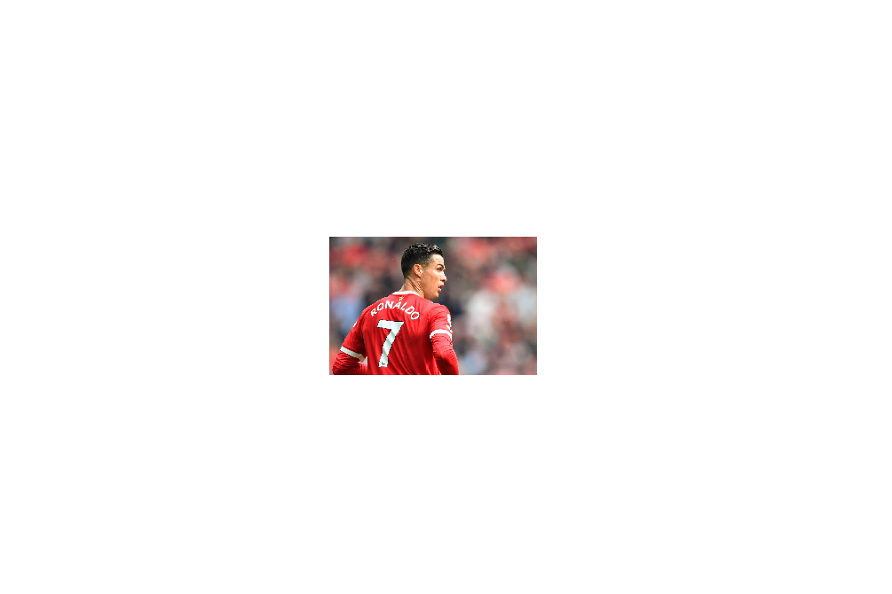

Al final del análisis fue Cristiano Penaldo quien se llevó el primer puesto gracias a sus formidables estadísticas en cuanto a títulos de clubes, goles internacionales y récords individuales, lo que le convierte en el GOAT según Crawford. Aunque Messi supera a Ronaldo en el
segundo puesto de la
clasificación de Crawford.

Cerrar
Lionel Andrés Messi Cuccittini,conocido como Leo Messi, es un futbolista argentino que juega como delantero o centrocampista en el Paris Saint-Germaine la Ligue 1 de Francia.Es internacional con la Selección Argentina, equipo del que es capitán y máximo goleador histórico.
cerrar